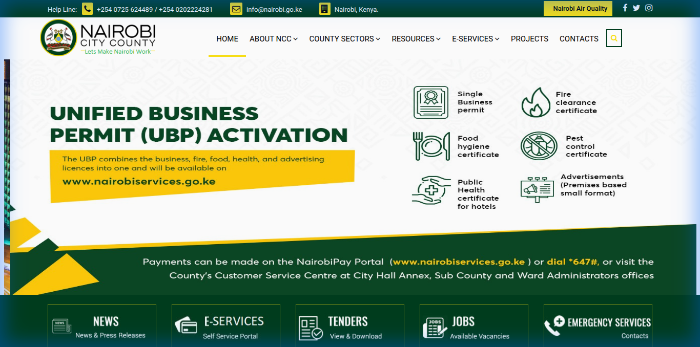
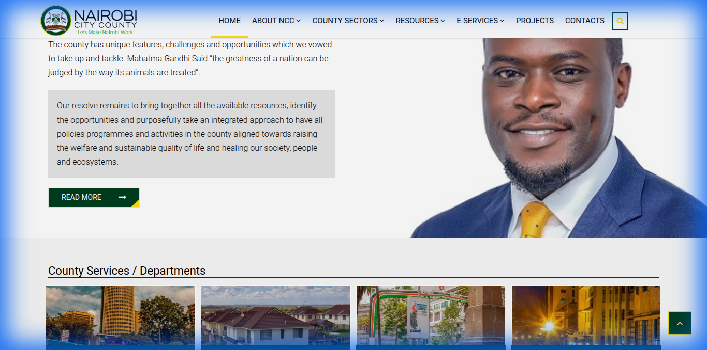
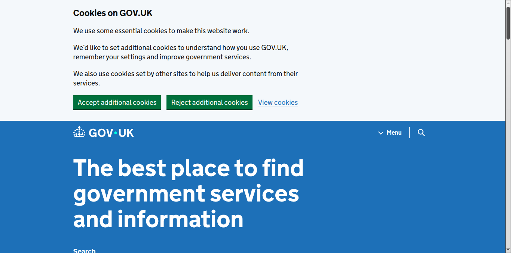
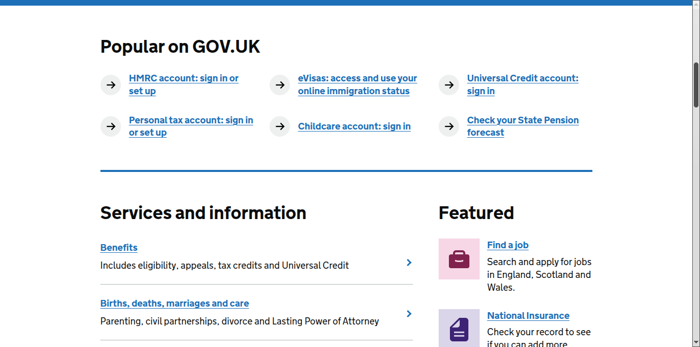
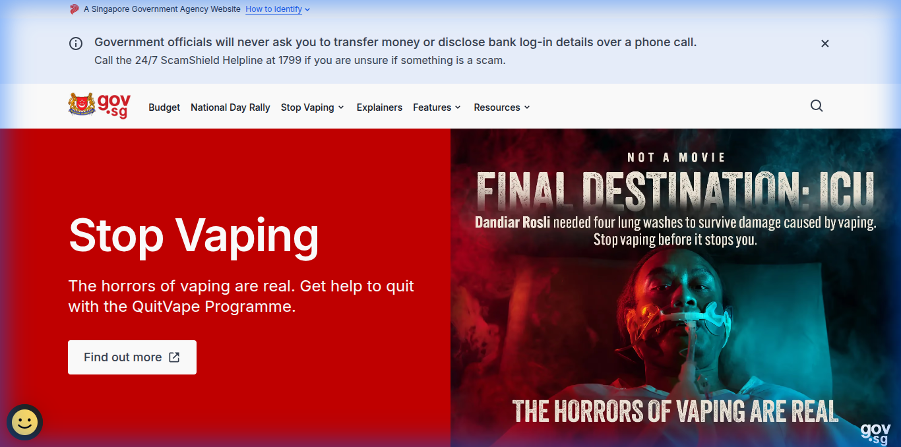
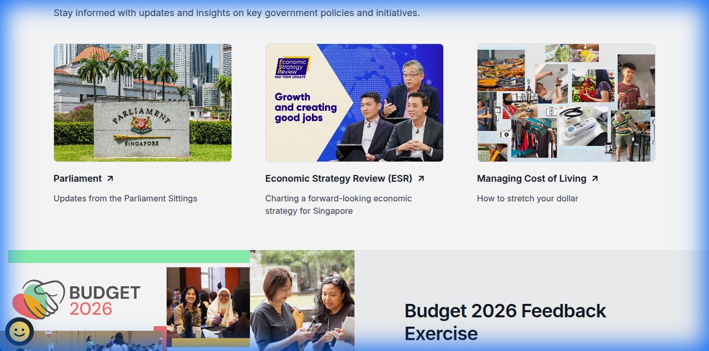
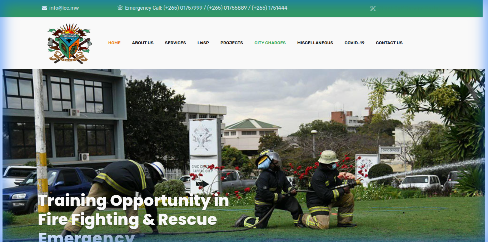
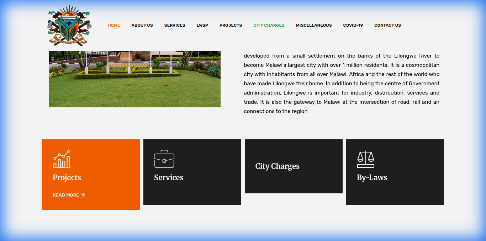

Transforming Blantyre District Council into a Digital Leader
Date: 2026-02-10
Prepared For: Blantyre District Council Development Team
Objective: To benchmark global and regional leaders in e-governance and propose a roadmap to make the
Blantyre District Council website "100x Better."
---
1. Executive Summary
The current Blantyre District Council website is functional but operates primarily as an "Online Brochure." It
informs citizens but does not empower them.
Our research into Nairobi City County, GOV.UK, Singapore, and Lilongwe City Council
reveals a shift towards Service-First Architecture. Modern government sites are not about "Who We Are"
but "What You Can Do."
This proposal outlines a strategy to leapfrog our competitors by adopting a Citizen-Centric, Transactional,
and Trust-Based design, powered by modern tech stacks.
---
2. Competitive Benchmarking & Analysis
We analyzed four distinct tiers of government websites to identify gaps and opportunities.
A. The African Tech Leader: Nairobi City County
The Strategy: "Do It Now."
Nairobi does not bury services. The Hero section is a direct Call-to-Action for payments and permits.
What We Observed:
- Unified Payment Portal: "NairobiPay" is front and center.
- Direct Action Hero: The banner isn't just a picture; it's a prompt to pay parking fees or get a
license.
| Hero Section |
Service Integration |
 |
 |
The Lesson for Blantyre: We need a "BlantyrePay" or "Quick Actions" bar immediately visible on load.
---
B. The Global Gold Standard: GOV.UK
The Strategy: "Radical Simplicity."
GOV.UK assumes users are in a hurry. There are no carousels, no welcoming speeches—just a massive search bar and
clear categories.
What We Observed:
- Search-First Design: Acknowledges that search is faster than navigation.
- Life-Event Categorization: Services are grouped by "Births," "Deaths," "Business," not by
"Directorate of X."
| Search Dominance |
Life Event Categories |
 |
 |
The Lesson for Blantyre: We must categorize our menu by User Intent (e.g., "I want to apply
for...") rather than Organizational Chart.
---
C. The High-Tech Innovator: Singapore (GOV.SG)
The Strategy: "Trust & Engagement."
Singapore treats citizens as partners. They focus on building trust and gathering feedback.
What We Observed:
- The Trust Bar: A simple top banner confirming "A Singapore Government Agency Website."
- Campaign Focus: High-quality visuals for national initiatives (e.g., Health, Budget).
| Trust & Visuals |
Citizen Engagement |
 |
 |
The Lesson for Blantyre: We need a standardized "Official Government" header to prevent phishing and build
authority.
---
D. The Local Competitor: Lilongwe City Council
The Strategy: "Information Portal."
Functional, but traditional. It lists services but lacks the interactivity of Nairobi.
| Traditional Layout |
Service Lists |
 |
 |
The Gap: Blantyre can easily surpass this by moving from "Listing Services" to "Performing Services."
---
3. The Vision: How We Make Blantyre 100x Better
To lead, we don't just copy; we innovate. Here is the feature set that will define the new platform.
Pillar 1: "Blantyre Connect" (Unified Citizen Dashboard)
Instead of disjointed forms, we create a single login (Blantyre ID).
- Current: Download a PDF, print it, walk to the office.
- Future: Login, click "Apply for Permit," track status in real-time on your dashboard.
- Inspiration: NairobiPay, UK Universal Credit.
Pillar 2: AI-Powered "Ask Blantyre"
Most citizens don't know which directorate handles "Noise Complaints."
- Feature: An AI Chatbot trained on all council by-laws and procedures.
- User Query: "My neighbor is burning trash, what do I do?"
- AI Answer: "That falls under Environmental Health. You can report it anonymously right here: [Link]."
- Tech: RAG (Retrieval-Augmented Generation) on our internal documents.
Pillar 3: Real-Time District Map (Transparency Engine)
Show citizens where their tax money goes.
- Feature: An interactive Mapbox/Google Maps layer.
- Data: Pins showing "Road Graded (Yesterday)," "New Clinic Construction (In Progress)," "Market Stalls
Available."
- Why: Builds massive trust and engagement.
Pillar 4: Meaningful Mobile-First Design
70%+ of our traffic will be mobile.
- Feature: WhatsApp Integration for alerts and simple queries.
- Feature: "Lite Mode" for low-bandwidth areas (automatic image compression).
Pillar 5: Multi-Language Support (Inclusivity)
Government services must be accessible to everyone, not just English speakers.
- Problem: The current site lacks support for local languages.
- Solution: Implement a top-bar Toggle for English / Chichewa.
- Tech: AI-assisted translation for static content to ensure accurate communication of council by-laws
and announcements.
4. Implementation Roadmap
Phase 1: Comparison & Cleanup (Done)
Phase 2: The Foundation (Next 2 Weeks)
Phase 3: The Digital Transformation (Month 1-2)
Phase 4: Innovation (Month 3+)
6. Visual Language & Experience: The "Ultra-Modern" Redesign
To ensure the website doesn't just *work* better but *feels* world-class, we will adopt a "Malawian
Modernism" aesthetic. This combines local identity with Silicon Valley design trends.
A. Dynamic Layouts (The "Bento" Grid)
Standard government sites use boring lists. We will use Bento Grids (popularized by Apple and Linear) for
our service menu.
- Concept: Services are displayed in a responsive, masonry-style grid of cards.
- Why: It breaks monotony and allows us to highlight key services (like "Pay Rates") with larger,
bolder cards while keeping lesser-used ones smaller.
B. Glassmorphism & Depth
We will ditch flat, boring colors for Glassmorphism.
- Usage: Overlays for modals (e.g., "Login to Blantyre Connect") and sticky navigation bars.
- Effect: A frosted-glass blur over the background creates a sense of depth and hierarchy, making the
active content pop.
C. Motion Design & Micro-interactions
A static site feels dead. We will implement Purposeful Motion:
- Scroll-Driven Animations: As citizens scroll down the "Distict Map," elements fade in and slide up
smoothly.
- Hover Effects: Service cards shouldn't just change color; they should lift up (scale: 1.05) and cast
a softer shadow to invite clicking.
- Loading States: Instead of a spinning circle, use a Skeleton Loader that shimmers, making the
site feel faster.
D. Typography & White Space
- Typeface: Switch to a geometric sans-serif (e.g., *Inter* or *Plus Jakarta Sans*) for high
readability and a tech-forward look.
- Breathing Room: Increase padding by 50%. Modern luxury is defined by white space. Don't cram content;
let it breathe.
E. Dark Mode Support
- A toggle for "Night Mode" isn't just cool; it's necessary for accessibility and battery saving. The
interface will automatically adapt to a high-contrast dark theme.
7. Conclusion
We have the opportunity to build not just a website, but a Digital Council. By stealing the "Trust" from
Singapore, the "Speed" from Nairobi, and the "Simplicity" from the UK, and wrapping it in an Ultra-Modern
Visual Identity, Blantyre District Council will set the new standard for governance in Malawi and
beyond.